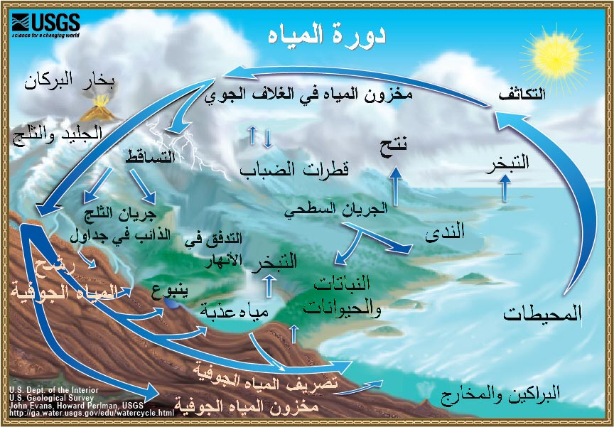
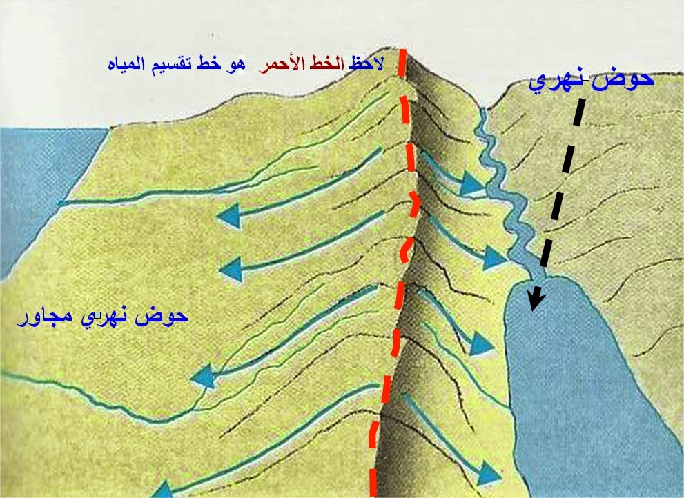
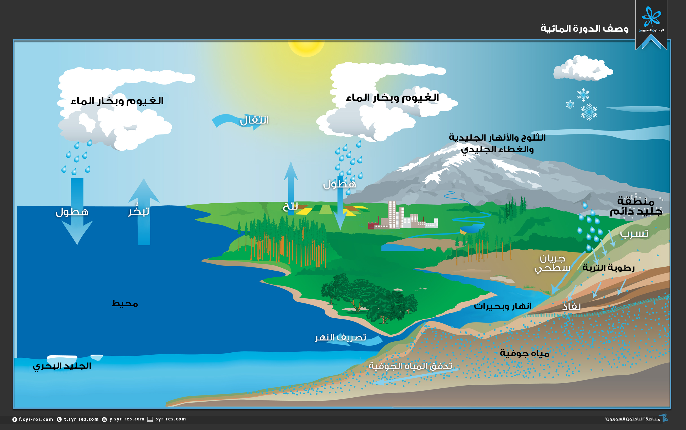

تتوزع المياه على سطح الارض كما في الشكل المجاور .
يوجد 79% من المياه العذبة على صورة جليد في المناطق القطبية.
يوجد 20% من المياه العذبة على شكل مياه جوفية.
يوجد 1% فقط على شكل مياه عذبة سطحية.
الدورة المائية وهي العمليات التي تنتقل بواسطتها المياه من مكان لاخر بين الغلاف المائي واليابسة والغلاف الجوي.
العمليات التي تتضمنها الدورة المائية:
1. التبخر
2. التكاثف
3. الهطل
4. الارتشاح
5. الجريان السطحي
شروط حدوث التبخر هي : أ. توفر مصدر للماء ب. توفر مصدر للطاقة ج. قدرة الهواء على استيعاب هذا البخار.
حتى يتكون الهطل لابد من حدوث عملية التكاثف التي بواسطتها تشكل الغيوم التي تتكون من قطيرات صغيرة تكون معلقة بالهواء وعندما يصبح حجمها كاف تسقط تحت تأثير الجاذبية .
يحدث الجريان السطحي عندما تصبح التربة غير قادرة على استيعاب الهطل الساقط عليها .
الارتشاح: هي عملية دخول ماء المطر الى داخل مسامات التربة.
سعة الارتشاح : هي قدرة التربة على استيعاب المطر .
العوامل المؤثرة في الارتشاح :
1. شدة الهطل
2. زمن الهطل
كلما قلت شدة الهطل وزاد زمن الهطل زاد معدل الارتشاح ، ويحدث الجريان عندما يكون معدل الهطل اكبر من قدرة التربة على استيعاب الماء .


الجريان السطحي
هو المساحة الارضية التي تزود اي مجرى مائي بالماء .
خط تقسيم المياه : هو فاصل على هيئة مرتفع يفصل بين كل حوض والحوض الذي يجاوره .
يستخدم الحوض المائي لحساب كميات عناصر الدورة المائية من هطل ، وتبخر ، وجريان ، وتغذية للمياه الجوفية .
العوامل التي يعتمد عليها شكل الحوض السطحي المائي :
1. التضاريس .
2. نوع الصخور التي يمر فوقها الماء .
3. التراكيب الجيولوجية كالطيات والصدوع .

الموازنة المائية
هي المقارنة بين كمية المياه الداخلة الى مساحة معينة من سطح الارض كالحوض المائي السطحي او جسم بحيرة مثلا ، وكمية المياه التي تخزن داخل هذه المساحة ، والكمية التي يمكن ان تخرج منها .
التغير في كمية التخزين = كمية المياه الداخلة - كمية المياه الخارجة